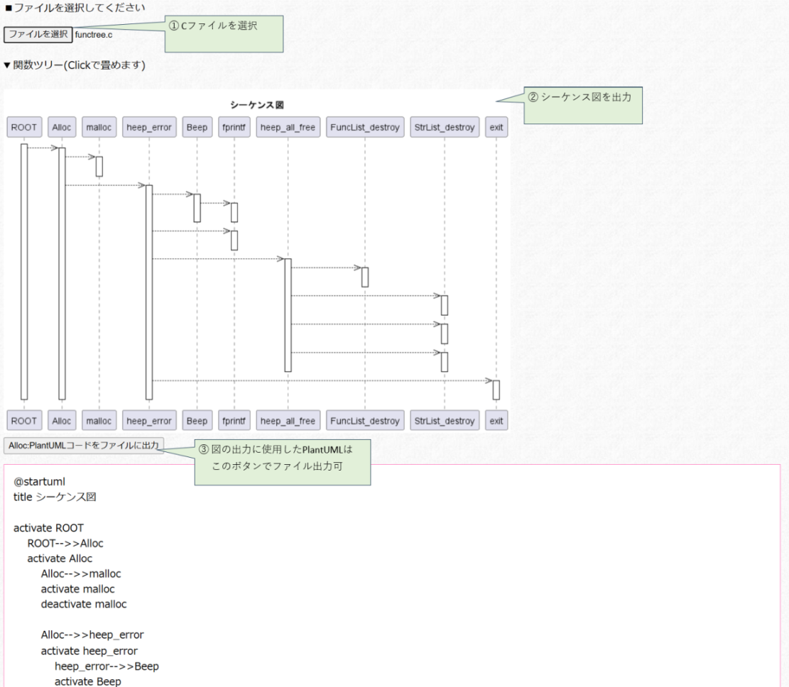
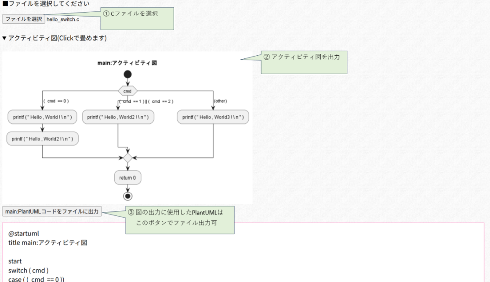

C言語解析ツール

■このサイトについて
「C言語解析ツール」は、C言語で書かれたコードから各種の解析図を得ることを目指しています。
出力された内容について、品質の保障はしておりません。
ご利用に際してはご自身にて結果の正しさを確認の上、ご利用ください。
※手書きで0から作成するよりかは少し楽になる程度のものです。
■PlantUML Severの選択
UML図の出力にはPlantUMLを利用していますので、ローカルサーバとオンラインサーバのどちらを使うか選択ください。
(PlantUMLについては別途Webで調べてください)
※ローカルサーバのテキストボックスのURLはご自身の環境に併せて変更ください
※設計情報を外部サーバに送信したくない・オンラインサーバサーバだと遅い方はローカルサーバを選択ください
※ローカルサーバを用意していない or とりあえず動かしたい方はオンラインサーバを選択すれば動きますが、
PlantUMLのPicoServerを自PCで起動すれば手軽にローカルサーバとして利用できますので、そちらをお勧めします。
■C言語⇒シーケンス図変換
Cコードをシーケンス図に変換する
■C言語⇒アクティビティ図変換
Cコードをアクティビティ図に変換する
■デバッグ用の途中データ表示
制作者(私)向けのデバッグ用情報です。
※制作者(私)以外には意味のないページです。